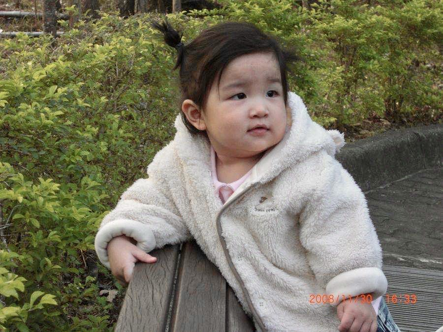
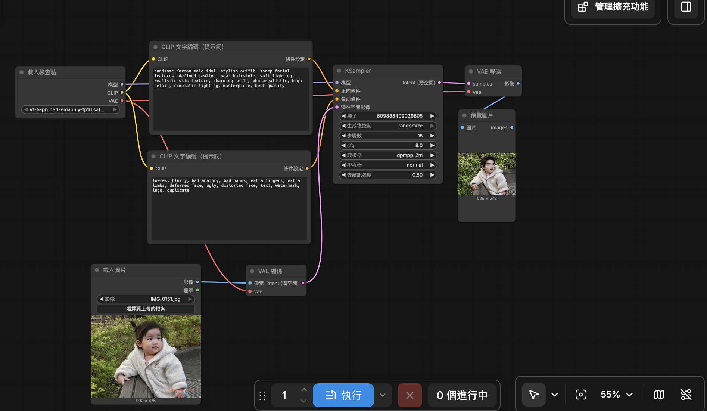

正向提示詞：handsome Korean male idol, stylish outfit, sharp facial features, defined jawline, neat hairstyle, soft lighting, realistic skin texture, charming smile, photorealistic, high detail, cinematic lighting, masterpiece, best quality
反向提示詞：lowres, blurry, bad anatomy, bad hands, extra fingers, extra limbs, deformed face, ugly, distorted face, text, watermark, logo, duplicate
蠻好玩的，只是有點複雜，花了好多時間但感覺還是沒什麼搞懂